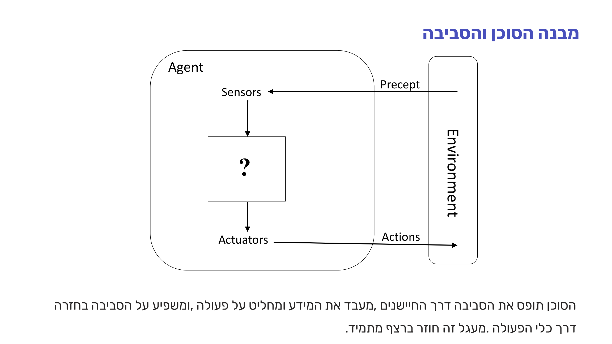
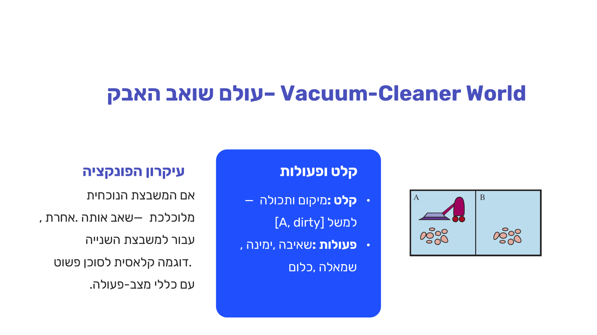
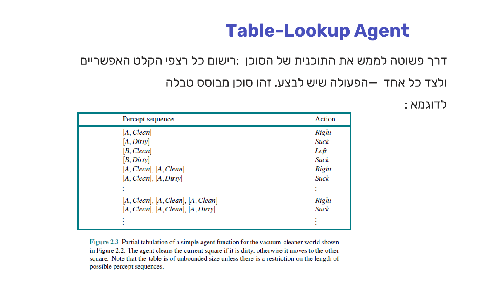
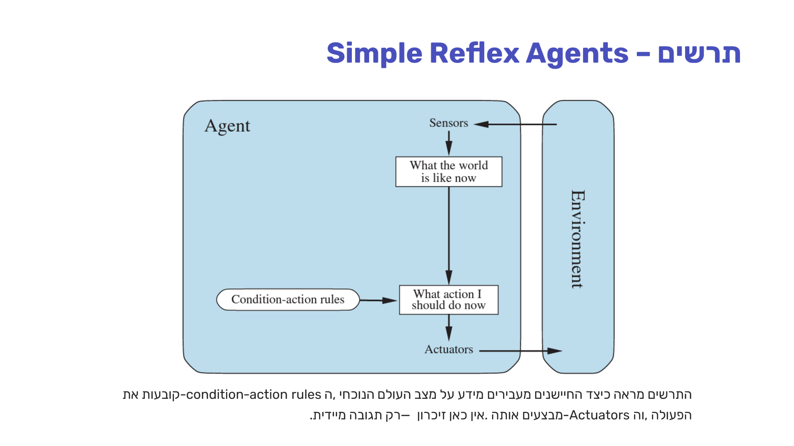
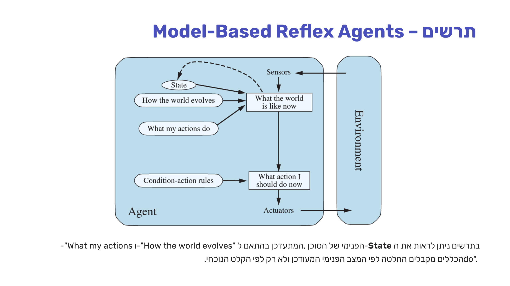
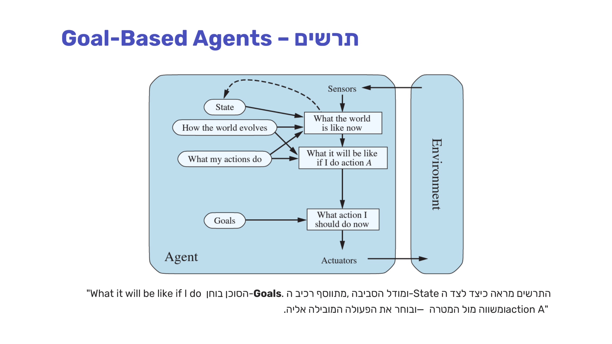
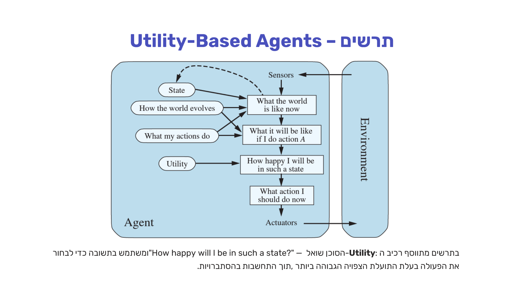
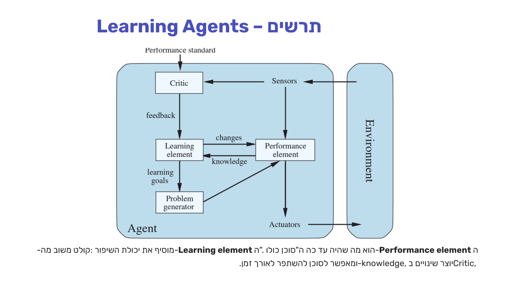

סוכנים אינטליגנטיים
⏱ זמן משוער: 50 דק'
0. האינטואיציה — מהו סוכן?
סוכן (agent) הוא כל דבר שקולט את סביבתו (environment) דרך חיישנים (sensors) ופועל בה בעזרת כלי פעולה (actuators). ההגדרה הזו כללית להפליא — היא חלה גם על בני אדם וגם על רובוטים:
- בני אדם: חיישנים = עיניים, אוזניים, עור, חוש ריח וטעם; כלי פעולה = ידיים, רגליים, פה — כל איבר שמאפשר תגובה לסביבה.
- רובוט: חיישנים = מצלמות, חיישני מגע, GPS, מיקרופון; כלי פעולה = מנועים, זרועות מכניות, רמקולים ומסכי תצוגה.
המעגל הזה — תפיסה דרך החיישנים, עיבוד והחלטה, השפעה חזרה על הסביבה דרך כלי הפעולה — חוזר על עצמו ברצף מתמיד. זה כל מה שסוכן הוא: לולאה של תפיסה ← החלטה ← פעולה.

מקור: 02-intelligent-agents.pdf (עמ' 3–6)
1. פונקציית הסוכן מול תוכנית הסוכן
סוכן מקבל קלט יחיד או רצף של קלטים (percepts) ועל פיהם מבצע פעולות בסביבתו. כאן מגיעה ההבחנה הכי חשובה של הפרק — שאלת מבחן קלאסית:
כלומר: הפונקציה היא תיאור אידיאלי-מתמטי מחוץ לסוכן; התוכנית היא מה שבאמת רץ בתוך הסוכן, וצריכה לממש התנהגות שתואמת את הפונקציה — אבל בלי לזכור בהכרח את כל ההיסטוריה.
מקור: 02-intelligent-agents.pdf (עמ' 5)
2. דוגמה מלווה — עולם שואב האבק (Vacuum World)
כדי להפוך את שתי ההגדרות למוחשיות, המרצה מלווה את כל הפרק בדוגמה אחת: עולם שואב אבק פשוט עם שתי משבצות, A ו-B.
- קלט: מיקום ותכולה — למשל [A, dirty].
- פעולות: שאיבה (Suck), ימינה, שמאלה, כלום.

עיקרון הפעולה: אם המשבצת הנוכחית מלוכלכת — שאב אותה; אחרת עבור למשבצת השנייה. זו התוכנית (agent program) שמממשת את הרעיון:
Function VacuumAgent([location, status]) returns an action
if status = dirty then return Clean
else if location = A then return Right
else if location = B then return Left
תוכנית זו מכסה את כל שילובי הקלט האפשריים בעולם הפשוט הזה. שימו לב: כל פעולה נקבעת אך ורק לפי המצב הנוכחי — ללא זיכרון היסטורי כלשהו על מה שקרה קודם.
מקור: 02-intelligent-agents.pdf (עמ' 7–8)
3. מדד ההצלחה וסוכן הגיוני
סוכן מוצלח מבצע בכל שלב את הדבר הנכון. אבל כדי לדעת מהי "הפעולה הנכונה" צריך להגדיר מראש מדד אובייקטיבי להצלחה (performance measure). עבור שואב האבק אפשר להעלות כמה מדדים שונים:
- מדד א': כמות לכלוך שנשאב בכל יחידת זמן.
- מדד ב': אחוז המשבצות הנקיות בכל רגע נתון.
- מדד ג': צריכת חשמל נמוכה תוך שמירה על ניקיון.
על הבסיס הזה מגדירים סוכן הגיוני (rational agent):
רציונליות תלויה תמיד בהנחות שהוגדרו: אם הסביבה נקייה לחלוטין לאחר שאיבה אבל הלכלוך חוזר, השואב הפשוט שלנו הגיוני — הוא מנקה כל מקום מלוכלך שהוא רואה. אבל אם הלכלוך חד-פעמי ואינו חוזר, סוכן שממשיך להסתובב ללא מטרה מבזבז אנרגיה — פעולה בלתי הגיונית תחת ההנחות החדשות.
מקור: 02-intelligent-agents.pdf (עמ' 9–12)
4. הדרך הנאיבית לממש תוכנית — Table-Lookup Agent
הדרך הפשוטה ביותר לממש תוכנית סוכן: לרשום כל רצפי הקלט האפשריים, ולצד כל אחד את הפעולה שיש לבצע. זהו סוכן מבוסס-טבלה.

למרות הפשטות, לגישה הזו ארבע בעיות קשות:
- גודל עצום — עבור p קלטים אפשריים ו-t צעדים, הטבלה מכילה p^t כניסות. בשחמט: כ-10¹⁵⁰ כניסות!
- זמן מילוי — לוקח זמן בלתי סביר למלא טבלה כה עצומה, גם עם אמצעי עיבוד מתקדמים.
- מילוי לא ברור — לא תמיד ברור מראש כיצד למלא את הטבלה; לא כל מצב ניתן לצפות מראש.
- חוסר אוטונומיה — הסוכן אינו יכול ללמוד או להסתגל; הוא תלוי לחלוטין בטבלה שמולאה מראש.
ארבע הבעיות האלה בדיוק מסבירות למה צריך משהו חכם יותר מטבלה — וזה מוביל לחמשת סוגי הסוכנים הבאים.
מקור: 02-intelligent-agents.pdf (עמ' 14–15)
5. חמשת סוגי הסוכנים — מהפשוט למתוחכם
סדר עולה של תחכום: Simple Reflex ← Model-Based Reflex ← Goal-Based ← Utility-Based ← Learning Agent. כל רמה מוסיפה רכיב אחד שפותר חולשה של הרמה הקודמת. הנה סקירה קצרה שמניחה את הטקסונומיה כולה, ואז נצלול לכל סוג בנפרד:
5.1 Simple Reflex Agent
לסוכן יש קובץ של כללי condition → action: בהינתן מצב העולם והקלט, קיים כלל מה לעשות. פועל כמו רפלקס אוטומטי — ללא חשיבה מעמיקה. עיקרון הפעולה: הסוכן בוחר פעולה לפי הקלט הנוכחי בלבד, ללא קשר לכל היסטוריית קלט קודמת — מה שמצמצם מאד את מרחב האפשרויות. דוגמה: שואב האבק שראינו למעלה.

דוגמה: תרמוסטט. חיישן קולט טמפרטורה > 23° → הפעל מזגן (On); טמפרטורה ≤ 23° → כבה מזגן (Off). כלל אחד פשוט לכל מצב אפשרי, ללא שום זיכרון של טמפרטורות קודמות.
חסרונות:
- ראייה חלקית — אם הסוכן אינו רואה את כל הסביבה, הכלל הפשוט עלול להיכשל.
- אין הסתגלות — שינוי בסביבה דורש עדכון ידני של כל הכללים; אין יכולת למידה.
- לולאות אינסופיות — ללא זיכרון, הסוכן עלול לחזור על אותן פעולות שוב ושוב ללא התקדמות.
5.2 Model-Based Reflex Agent
כאשר הסוכן אינו יכול לראות את כל הסביבה בו-זמנית, עליו לשמור מצב פנימי (state) המייצג את העולם לפי מה שנצפה בעבר, בעזרת שני מודלים:
- מודל הסביבה — הבנה כיצד הסביבה משתנה ללא קשר לפעולות הסוכן (תופעות חיצוניות אוטונומיות).
- מודל הפעולה — הבנה כיצד פעולות הסוכן עצמו משפיעות ומשנות את מצב הסביבה.

דוגמה: אותה תוכנית שואב אבק, בתוספת תנאי מבוסס-מודל:
Function VacuumAgent([location, status]) returns an action
if time > 8:00 and time < 22:00
if status = dirty then return Clean
else if location = A then return Right
else if location = B then return Left
נוסף תנאי שעות פעולה — מידע פנימי שאינו נגזר מהקלט הרגעי בלבד.
5.3 Goal-Based Agent
לרוב, מעבר למצב העולם, הסוכן צריך לדעת אילו מצבים מקדמים אותו אל המטרה (goal) — ידיעת המצב הנוכחי בלבד אינה מספיקה. לעיתים כדי לדעת האם מצב מסוים רצוי יש לחשוב קדימה: מה יקרה אם אבצע פעולה זו? זהו חיפוש ותכנון. במקום כללים קבועים — חישוב דינמי מה יהיה טוב בעתיד, ומכאן גמישות גבוהה: שינוי במציאות אינו דורש שינוי כללים, רק עדכון המטרה.

5.4 Utility-Based Agent
לפעמים גם מטרה ברורה אינה מספיקה — ייתכנו דרכים מרובות להגיע אליה, חלקן טובות יותר מאחרות (למשל כמה מסלולים אפשריים ליעד נסיעה). כשיש כמה מסלולים למטרה, צריך לדרג כמה טובה כל פעולה — לא רק אם היא מביאה למטרה. פונקציית תועלת (utility function) ממפה מצב למספר בר-השוואה, ומאפשרת לבחור את הפעולה המועילה ביותר גם כשמטרות סותרות זו את זו — ומכריעה למי יש סיכוי גבוה יותר להצלחה בתנאי אי-ודאות.

5.5 Learning Agent
למידה מאפשרת לסוכן לצבור ידע מעבר לידע המוטמע בו מראש, ולפעול היטב גם בסביבה שלא הייתה ידועה לחלוטין מראש. ארבעה רכיבים:
- ביקורת (Critic) — שומרת מדד סטנדרטי להצלחה (Performance Standard), מעריכה את איכות הפעולות שביצע הסוכן, ומעבירה feedback לאלמנט הלמידה.
- אלמנט הלמידה (Learning element) — מקבל את המשוב, מנתח מה עבד ומה לא, ומייצר כללים (changes) חדשים לשיפור הסוכן.
- מייצר בעיות (Problem generator) — מציע ניסויים חדשים לחקר תחומים שבהם ידע הסוכן דל, כדי לתרום לשיפור הכולל.
- אלמנט הפעולה (Performance element) — מכיל את הידע והפעולות הקיימות ומחליט על הפעולה הבאה (זהו מה שהיה עד כה ה"סוכן כולו" בארבעת הסוגים הקודמים).

טבלת סיכום — חמשת הסוגים:
| סוג סוכן | מבוסס על | דוגמה מהשקפים |
|---|---|---|
| Simple Reflex | כללי condition-action, קלט נוכחי בלבד, ללא זיכרון | תרמוסטט |
| Model-Based Reflex | State פנימי + מודל סביבה + מודל פעולה | שואב אבק עם תנאי שעות (8:00–22:00) |
| Goal-Based | רכיב Goals + חיפוש/תכנון קדימה | ניווט אל יעד מוגדר |
| Utility-Based | פונקציית תועלת — "כמה אשמח במצב הזה" | בחירה בין כמה מסלולים ליעד |
| Learning | Critic + Learning element + Problem generator + Performance element | הסתגלות לאורך זמן לסביבה לא מוכרת |
מקור: 02-intelligent-agents.pdf (עמ' 16–31)
6. הגדרת מרחב הבעיה — PEAS
לפני שמתכננים סוכן, יש להגדיר במדויק את מרחב הבעיה שבו הוא פועל — הגדרה מדויקת היא תנאי הכרחי לבניית סוכן אפקטיבי. PEAS היא מסגרת מובנית לכך, בת ארבעה רכיבים:
- Performance Measure — מדד ההצלחה: כיצד נמדוד האם הסוכן הצליח?
- Environment — תיאור הסביבה שבה הסוכן פועל.
- Actuators — כלי הפעולה העומדים לרשות הסוכן.
- Sensors — החיישנים שדרכם הסוכן תופס את הסביבה.
דוגמה מלאה — נהג מונית אוטומטי:
| רכיב | עבור נהג מונית אוטומטי |
|---|---|
| Performance | נסיעה בטוחה, מהירה, חוקית ונוחה; מקסום רווחים. |
| Environment | כבישים, תנועה אחרת, הולכי רגל, לקוחות, מזג אוויר. |
| Actuators | הגה, דוושות גז ובלם, איתות, צופר. |
| Sensors | מצלמות, סונאר, מד-מהירות, GPS, חיישני מנוע, מקלדת. |
שימו לב איך כל רכיב עונה על שאלה שונה לגמרי: מה נחשב הצלחה (P), מה מסביב (E), איך פועלים (A), ואיך תופסים מידע (S). זהו התבנית שתחזור על עצמה בכל תרגיל סיווג סביבה שתפגשו בקורס.
מקור: 02-intelligent-agents.pdf (עמ' 32–35)
7. שישה צירי סיווג סביבת המשימה
אחרי שמגדירים את מרחב הבעיה עם PEAS, אפשר לסווג את הסביבה עצמה לפי שישה צירים — וזה בדיוק מה שהמבחן אוהב לבדוק. לכל ציר שתי (ולפעמים שלוש) אפשרויות:
7.1 גלויה לחלוטין / חלקית
Fully Observable: הסוכן קולט מהחיישנים את מצב הסביבה המדויק
בכל רגע — נוח מאד, אין צורך לשמור מידע פנימי על העולם. דוגמה: שחמט, שם כל הכלים גלויים.
Partially Observable: הסוכן רואה חלק מהסביבה בלבד ועליו לשמור
מצב פנימי ולהסיק מסקנות על החלק הנסתר. דוגמה: נהיגה בערפל, פוקר.
7.2 דטרמיניסטית / לא דטרמיניסטית
דטרמיניסטית: המצב הבא של הסביבה נקבע לחלוטין על ידי המצב הנוכחי ופעולת הסוכן — אין
הפתעות.
לא דטרמיניסטית (Stochastic): גורמים אקראיים משפיעים על תוצאת
הפעולה. לעיתים הסביבה דטרמיניסטית אך נראית אקראית בגלל ראייה חלקית — דוגמה: שולה מוקשים.
7.3 אפיזודית / רציפה
Episodic: ניתן לחלק את ניסיון הסוכן לאפיזודות עצמאיות; כל אחת
מכילה קליטת קלט ופעולה. ההחלטה בכל אפיזודה מתקבלת לפי הידע הנוכחי בלבד, ללא קשר לאפיזודות אחרות. דוגמה:
סיווג תמונות.
Sequential: כל החלטה משפיעה על ההחלטות הבאות — יש להתחשב
בהשלכות עתידיות. דוגמה: שחמט, שם מהלך אחד משפיע על כל המשחק.
7.4 בדידה / מתמשכת
Discrete: הבחנה ברורה ומוגדרת בין קלטים ופעולות שונים, מספר
מצבים סופי — נוח לייצוג מתמטי ולחישוב. דוגמה: שחמט (מספר משבצות וכלים מוגדר).
Continuous: מצבים, פעולות וקלטים הם ערכים רציפים, מצריכים
שיטות מתמטיות מורכבות יותר. דוגמה: נהיגה — זוויות הגה, מהירות, מיקום מדויק.
7.5 סטטית / דינאמית
Static: הסביבה אינה משתנה בזמן שהסוכן חושב ומחליט — אפשר
לחשוב בנחת. דוגמה: פאזל, שחמט ללא שעון.
Dynamic / Semi-Dynamic: הסביבה משתנה בזמן החשיבה. בסביבה
חצי-דינמית הסביבה עצמה לא משתנה, אך הניקוד של הפעולות משתנה עם הזמן — דוגמה:
שחמט עם שעון.
7.6 סוכן יחיד / מרובה
Single Agent: הסוכן פועל לבדו; אין ישויות אחרות שהתנהגותן
מושפעת ממנו או משפיעה עליו — מצב פשוט יותר לניתוח.
Multiagent — יריבים: סוכנים עם מטרות מנוגדות, כל אחד מנסה
למקסם את מדד ההצלחה שלו על חשבון האחר. דוגמה: שחמט.
Multiagent — שותפים: סוכנים עם מטרות משותפות הפועלים בשיתוף
פעולה. דוגמה: רובוטים במחסן Amazon.
תרגיל מלווה — רובוט שמטייל עם כלב
עכשיו נעבור מהגדרה לתרגול מלא. נניח שנרצה להמציא רובוט שתפקידו להוציא כלב לטיול אחר הצהריים. לרובוט יש יד המחזיקה ברצועה, ונתון לו מסלול מוגדר מראש להיכן עליו ללכת.
שאלה א': תארו את סביבת המשימה של הרובוט לפי מסגרת PEAS.
שאלה ב': סווגו את סביבת הבעיה של הרובוט לפי ששת הקריטריונים שלמדנו. נמקו בקצרה כל קריטריון.
שאלה א' (ה-PEAS של הרובוט) נותרה תרגיל פתוח ללא פתרון בשקפים — נסו לענות עליה בעצמכם לפני שממשיכים, לפי התבנית של דוגמת המונית למעלה. שאלה ב' זכתה לפתרון מלא:
- גלויה / חלקית: חלקית. הרובוט לא רואה את כל הסביבה — עצים, מכוניות, אנשים — חלקם עשויים להיות מחוץ לטווח החיישנים.
- דטרמיניסטית / לא: לא ניתן לחזות את תגובת הכלב. התנהגות הכלב וכלי רכב אחרים עשויים להיות בלתי צפויים.
- אפיזודית / רציפה: רציפה — החלטת הרובוט בכל צעד משפיעה על הצעדים הבאים (למשל, הכיוון שבו ילך עשוי להשפיע על כך אם הכלב ירגע).
- בדידה / מתמשכת: מיקום, מהירות וכוח המשיכה ברצועה הם ערכים רציפים — סביבה מתמשכת.
- סטטית / דינאמית: דינאמית — הסביבה משתנה בזמן שהרובוט חושב: כלב נמשך לכיוון אחר, הולך רגל חוצה דרך.
- סוכן יחיד / מרובה: הרובוט, הכלב, הולכי הרגל — מרובת סוכנים עם אינטראקציות מורכבות.
מקור: 02-intelligent-agents.pdf (עמ' 36–45)
8. מלכודות למבחן
9. תרגיל הבית — תרגיל 1 (חלק א׳): סיווג סביבות
זהו תרגיל הבית הראשון של הקורס. שתי השאלות הראשונות מיישמות בדיוק את מה שראינו בפרק הזה: סיווג סביבה לפי ששת הקריטריונים, פעמיים — עם שני סוגי סוכנים שונים מאוד. שאלה 3 של אותו תרגיל עוסקת בתיאור פורמלי של בעיה, ותופיע בהמשך, בפרק ניסוח בעיות חיפוש — שם היא שייכת.
שאלה 1 — רובוט חילוץ אחרי רעידת אדמה [30 נק']
נתאר סוכן שהוא רובוט שעוזר בפינוי הריסות וחילוץ לכודים לאחר רעידת אדמה. סווגו את סביבת הבעיה שבה הרובוט עובד — לפי 6 הקריטריונים. חובה לנמק בקצרה כל קריטריון שקבעתם.
- הסוכן עובד בסביבה שאינה גלויה — הוא מחפש לכודים שמוסתרים על ידי הריסות.
- הסוכן עובד בסביבה דטרמיניסטית — אמנם היא לא גלויה, אך היא דטרמיניסטית. הכללים חד-משמעיים, אין הפתעות. אם יפנה הריסות למקום שכלוא בו אדם, זה יפגע באדם הכלוא — אך זה לא שלא ברורה תוצאת פעולת העברת הריסות, אלא שהסביבה לא גלויה.
- הסביבה אינה בדידה, היא מתמשכת — קשה לתאר מהו מצב בו נמצא הרובוט: מיקום, זווית הזרועות שלו, כל כמה זמן?
- הסביבה הינה רציפה (sequential) — החלטה מה לפנות כעת יכולה להשפיע על המשך עבודתו.
- הסביבה היא סטטית, בהנחה שרעידת האדמה הסתיימה — ההריסות אינן זזות. ניתן לטעון שהסביבה דינאמית, כי הזזת הריסות יכולה לגרום למפולות חדשות שמשנות את הסביבה.
- הסוכן עובד בסביבה של סוכנים מרובים — הוא חלק מצוות הצלה וצריך לעבוד בתיאום איתם.
שאלה 2 — סוכן פותר סודוקו [30 נק']
נרצה לבנות סוכן שפותר סודוקו. סווגו את סביבת הבעיה שבה סוכן הסודוקו עובד — לפי 6 הקריטריונים. יש לנמק בקצרה כל קריטריון שקבעתם.
- הסוכן עובד בסביבה גלויה — הלוח פרוש לפניו והתאים המלאים ידועים.
- הסוכן עובד בסביבה דטרמיניסטית — אין הפתעות בסודוקו; צריך לבחור ערך לפי הנתונים הקיימים.
- הסביבה בדידה — קל לתאר מצב של הבעיה כמטריצה המכילה את המספרים שכבר נכתבו.
- הסביבה הינה אפיזודית. כל שלב בסודוקו מחשבים ללא מחשבה על השלכות העתיד — למרות שהוא כולל מחשבות ושיקולים שונים לגבי משבצות שונות, אין תכנון: לא נאמר "נמלא משבצת מסוימת כדי לאפשר משבצת אחרת בהמשך" — ממלאים מה שאפשר.
- הסביבה היא סטטית — הלוח אינו משתנה תוך כדי שחושבים על הפעולה הבאה.
- הסוכן עובד בסביבה של סוכן יחיד — רק משתתף אחד עובד על פתרון הסודוקו.
מקור: ex01.pdf, sol01.docx
10. בדיקה עצמית
מהו ההבדל המדויק בין פונקציית הסוכן (agent function) לתוכנית הסוכן (agent program)?
מהי הבעיה המרכזית ב-Table-Lookup Agent שהיא הסיבה לחיפוש ארכיטקטורות חכמות יותר?
שואב אבק ממשיך לנוע בין המשבצות גם כשאין לכלוך, ומבזבז אנרגיה. באילו תנאים הפעולה הזו בלתי הגיונית?
מה מבדיל Model-Based Reflex Agent מ-Simple Reflex Agent?
לפי דוגמת ה-PEAS של נהג המונית האוטומטי, "כבישים, תנועה אחרת, הולכי רגל ומזג אוויר" שייכים לאיזה רכיב?
מה ההבדל בין סביבה "דינאמית" ל"חצי-דינמית" (semi-dynamic)?
רובוט חילוץ הריסות אינו רואה את כל הלכודים המוסתרים, אך פעולותיו חד-משמעיות וודאיות. כיצד מסווגים אותו לפי שני צירי הסיווג הרלוונטיים?
לפי פתרון תרגיל 1, מדוע סביבת סוכן הסודוקו מסווגת כ"אפיזודית" (episodic) ולא כ"רציפה" (sequential)?
סיימתם את הפרק? סמנו אותו כהושלם: